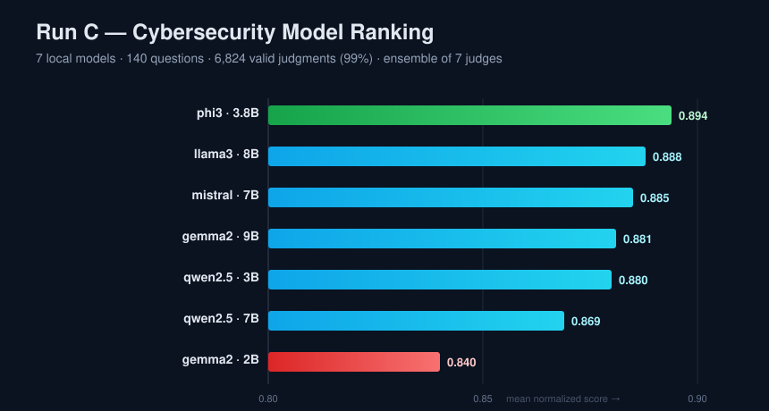
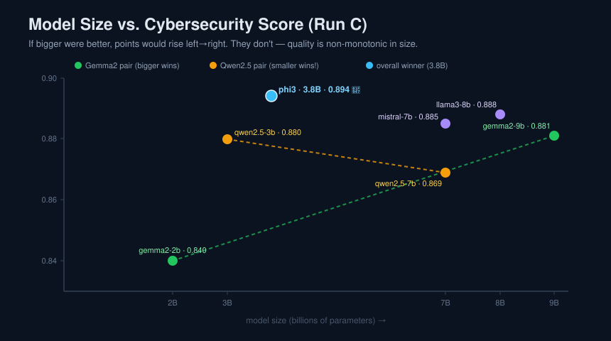
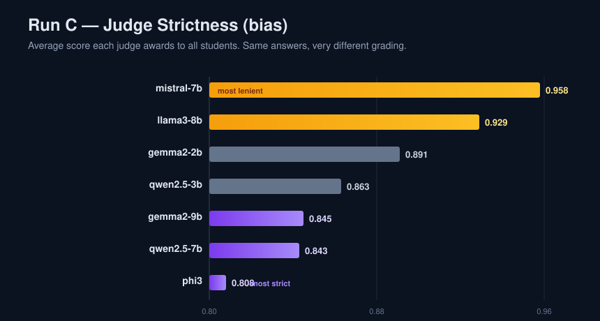

Run C · Large-scale local — the capstone
7 models · 140 questions · 6,860 judgments · ✅ Complete
The final, large run demonstrates that CoEval scales and tests the paper's claims on a pool big enough for controlled comparisons — including two same-vendor size pairs (gemma2 2B↔9B, qwen2.5 3B↔7B) to ask directly: does the bigger model always win?
All phases complete; 6,824 of 6,860 judgments valid (99%):
| # | Model | Vendor | Size | Score |
|---|---|---|---|---|
| 🥇 | phi3 | Microsoft | 3.8B | 0.894 |
| 🥈 | llama3 | Meta | 8B | 0.888 |
| 🥉 | mistral | Mistral | 7B | 0.885 |
| 4 | gemma2 | 9B | 0.881 | |
| 5 | qwen2.5 | Alibaba | 3B | 0.880 |
| 6 | qwen2.5 | Alibaba | 7B | 0.869 |
| 7 | gemma2 | 2B | 0.840 |



QUESTION (teacher)
A company uses a VPN to secure its remote workforce, but employees experience slow speeds and frequent outages. What security vulnerabilities might contribute, and what steps address them?
ANSWER · qwen2.5-3b
…weak or outdated encryption protocols, insufficient tunneling capacity causing congestion, and infrastructure issues unrelated to the VPN configuration. Mitigations: update VPN software/protocols, upgrade network hardware, and optimize…
Judge scores: 1.00 from six judges, 0.00 from phi3 — the maximum possible disagreement. A single-judge eval would have scored this a flat zero; the ensemble mean (0.80) is the defensible verdict.
| Measure | Result | vs. paper |
|---|---|---|
| Inter-judge agreement (Cohen's κ) | +0.131 … +0.309 (mean +0.198) | ✅ supports |
| Self-preference (winner phi3) | −0.042 (self-critical) | ✅ validates ranking |
| Rank stability (Run B ↔ C) | Spearman ρ = +1.000 | ✅ reproducible |
| Verbosity bias (ensemble) | r = +0.120 (not cancelled) | ⚠️ qualifies |
All reports in one place.
STUDENTPer-model scores & heatmaps.
JUDGEBias & reliability.
CONSISTENCYInter-judge ICC.
MATRIXTeacher × Student heatmap.
DATA140 questions, 980 answers, 6,860 judgments.
Did it succeed? Complete success — the project's authoritative result: a full 7-model ranking at 99% validity with controlled size-pair comparisons.
Problems & fixes: a multi-day run surfaced (a) the laptop sleeping → comprehensive no-sleep power
policy (fundamental); (b) a Windows Errno 22 on the redirected console handle → launch without
output redirection (fundamental); recovery throughout via --continue from checkpoints (temporary,
applied repeatedly).
What we concluded: bigger isn't always better (robust across runs and within size pairs); the ensemble ranking is stable (ρ = 1.000 vs Run B); judge bias is real but cancelled by aggregation — except verbosity bias, which our ensemble did not cancel (a principled qualification of the paper).
Full write-up: docs/05-run-C-findings.md · Conclusions: 06-conclusions.md